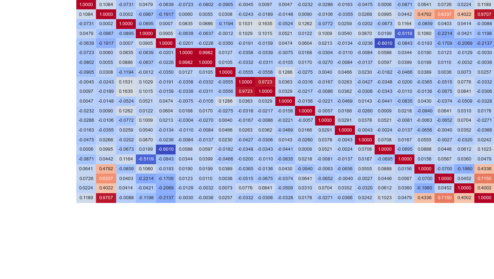

Making predictions on this limited dataset can be difficult but we can forecast following a Poisson distribution. \(\lambda\) is our distribution's expected value, and we can calculate it by the following formula where \(r\) is the rate at which a fireball would occur and \(t\) is the time since the last fireball occurrence and the date we want to forecast. \begin{equation*} \lambda = rt \end{equation*} The Probability Mass Function (PMF) denoted below gives us an estimate of exactly \(k\) number of fireballs occurring by that date. \begin{equation*} f(k,r, t) = P(X=k) = \frac{\lambda^k e^{-\lambda}}{k!} = \frac{(rt)^k e^{-(rt)}}{k!} \end{equation*} The Cumulative Distribution Function (CDF) provides us with the probability that \(k\) fireballs or less would occur. We can subtract 1 from the CDF of \(k-1\) to get at least that number \(k\) number of fireballs occurring. \begin{equation*} 1-\left(e^{-\lambda} \sum^{\lfloor k -1\rfloor}_{j=0}\frac{\lambda^j}{j!}\right) = 1-\left(e^{-rt} \sum^{\lfloor k -1\rfloor}_{j=0}\frac{(rt)^j}{j!}\right) \end{equation*} We can also look at the correlation matrix between each feature in our dataset to look at different relationships. We see there are strong relationships between TotalRadiatedEnergy-TotalImpactEnergy, Longitude-vy, and Latitude-vz. 
Applying a log transformation on both TotalRadiatedEnergy and TotalImpactEnergy gives us a clear relationship.
An interactive view of when a fireball occurred is provided below.
Looking at the time deltas of the whole dataset we see a large outlier at the beginning of 1988 which could result from not having an interest to record fireballs between those times. And the following graph is if we removed the dates before 1993(3). Finally, in the last graph, we see how many of each time deltas occur.